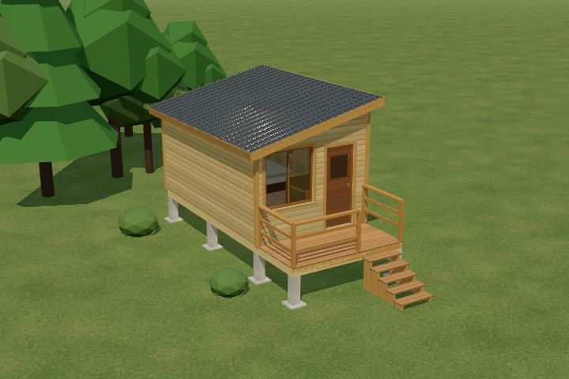
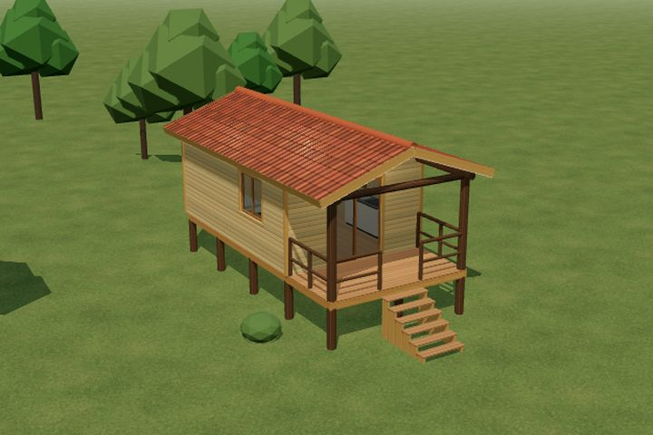
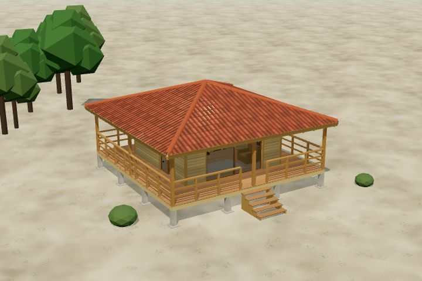
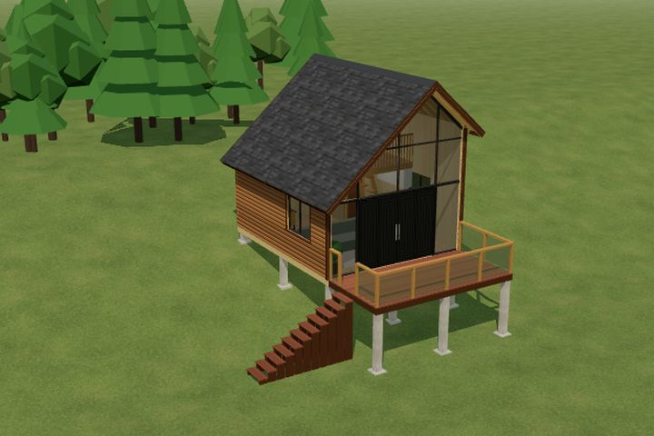

Terreno e acessos
Antes da proposta, verificamos declive, condições do solo, acesso para materiais e posição da construção no terreno.
Construímos cabanas de madeira para lazer, hospedagem ou moradia. Estudamos o terreno, a implantação, a estrutura e o acabamento para cada projeto, com atendimento em Tubarão, Laguna, Garopaba, Imbituba, Jaguaruna e região.
Falar sobre meu projeto
Gire o modelo, veja por dentro, a planta baixa e o valor de cada um, do básico ao alto padrão. Deck e varanda são orçados à parte.

3,00 × 5,00 m · 15 m² + deck
R$ 42.900
Ver em 3D →

4,00 × 6,00 m · 24 m² + varanda
R$ 68.640
Ver em 3D →

5,00 × 5,00 m · 25 m² + varanda
R$ 71.500
Ver em 3D →

5,00 × 6,00 m · 30 m² + mezanino
R$ 97.812
Ver em 3D →
Antes da proposta, verificamos declive, condições do solo, acesso para materiais e posição da construção no terreno.
A fundação e as ligações da estrutura devem ser definidas conforme as cargas e as condições do projeto, especialmente em construções elevadas.
O tamanho, a disposição dos ambientes, as aberturas e o acabamento dependem de ser uma cabana para lazer, hospedagem ou moradia.
Envie fotos do terreno, cidade, área aproximada e conte se a cabana será para lazer, hospedagem ou moradia. Com essas informações, conseguimos entender melhor o serviço e combinar uma visita quando necessário.
Enviar informações pelo WhatsApp